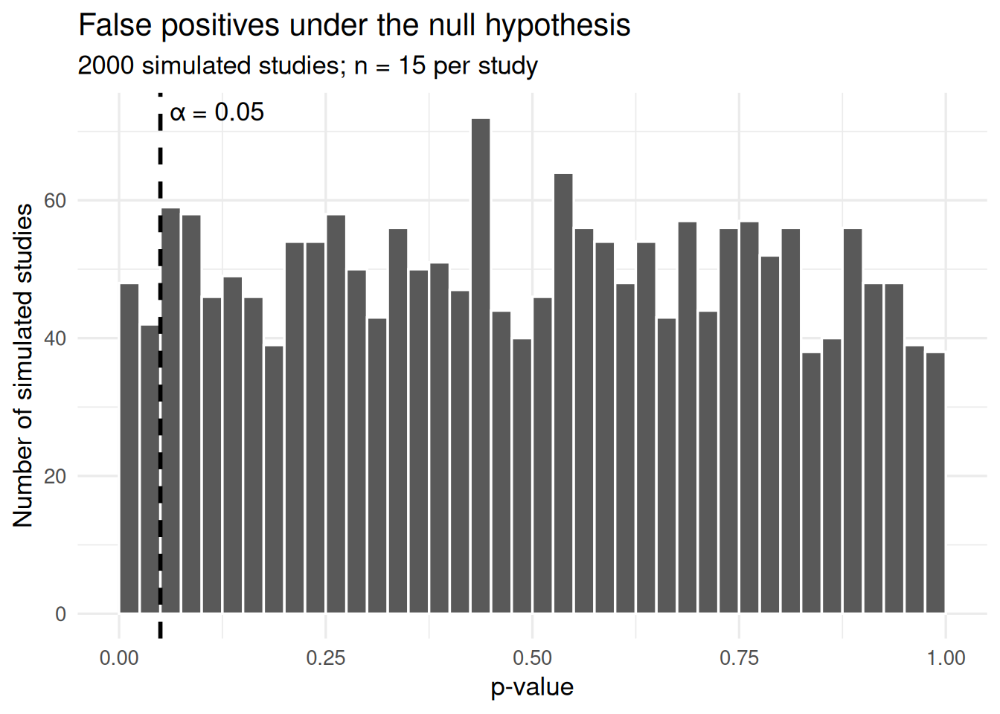

In hour 1 you built a null distribution by flipping signs on cards. This hour reproduces that procedure in code, then compares it with the analytic shortcut.
Coded permutation with prediction
The code below implements the sign-flip randomisation from hour 1. It flips signs at random on the fifteen paired differences, computes the mean, and repeats this 1 000 times to build a null distribution. The two-sided p-value is then computed as the proportion of null distribution values at least as far from zero as the observed mean.
Task: predict before running
Before you run the code, write down your answers to both questions:
What is the observed mean difference? (You can compute this from the fifteen values, or recall it from hour 1.)
Roughly what p-value do you expect? Use the board from hour 1 as your guide.
Figure 1: Null distribution of the mean paired difference under random sign-flipping. The dashed lines mark the observed mean and its mirror.
Task: check your prediction
Compare the output with your prediction. Where does the observed mean sit relative to the null distribution in Figure 1?
The observed mean difference is approximately 2.62 inches. Most of the null distribution sits near zero, because sign-flipping centres the distribution at zero under H0. The observed value falls in the tail.
Three edits
You will now make three changes to the permutation code above. Each edit is specified; make them one at a time and re-run after each.
Task: increase the number of shuffles
Change n_shuffles <- 1000 to n_shuffles <- 10000.
Before you run it, predict: will the p-value change substantially, or will it be similar?
The p-value should be similar but more stable. With more shuffles the estimate of the p-value becomes more precise, but the underlying proportion it estimates does not change.
Task: compute the one-sided p-value
The current code computes a two-sided p-value:
p_two <-mean(abs(null_dist) >=abs(observed))
Change this line to compute the one-sided p-value, counting only values at least as large as the observed mean (not the mirror). Replace the line with:
p_one <-mean(null_dist >= observed)
Before you run it, predict: will the one-sided p-value be larger or smaller than the two-sided value?
Smaller. The two-sided p-value counts both tails; the one-sided p-value counts only one. For a symmetric null distribution, the one-sided value is approximately half the two-sided value.
Task: change the statistic to the median
The code currently uses the mean as the test statistic. Change both occurrences of mean (the observed statistic and the statistic inside replicate) to median.
Before you run it, predict: will the p-value change?
It may change. The median is a different summary of the data and responds differently to extreme values. The null distribution changes shape because it is now built from medians rather than means. The permutation logic is the same — only the statistic differs.
Short composition: one-sided p-value
Reset your code so that it uses 10 000 shuffles, the mean as the statistic, and the two-sided p-value. The null distribution object null_dist now holds 10 000 sign-flipped means.
Task: write the one-sided p-value computation
Here is the two-sided p-value line:
p_two <-mean(abs(null_dist) >=abs(observed))
Using this as a model, write two or three lines of code that:
Compute the one-sided p-value (proportion of null distribution values greater than or equal to observed).
Write your code from scratch in the space below. Do not copy and paste the two-sided line and edit it — write it yourself, using the model as a reference.
The key change: remove abs() from both sides of the comparison. You are no longer asking “how far from zero in either direction?” but “how often does the null distribution exceed the observed value?”
The analytic shortcut
The sign-flip permutation requires no assumptions about the shape of the data. It builds the null distribution directly from the observed values. There is a shortcut: if you assume the paired differences come from a normal distribution, then the null distribution has a known mathematical form — the t-distribution. The t.test() function uses this shortcut.
t.test(darwin$difference, mu =0, alternative ="greater")
One Sample t-test
data: darwin$difference
t = 2.148, df = 14, p-value = 0.02485
alternative hypothesis: true mean is greater than 0
95 percent confidence interval:
0.4710482 Inf
sample estimates:
mean of x
2.616667
Task: read the output
The t.test() output contains several numbers. Identify each of the following in the printed output:
The test statistic (labelled t).
The degrees of freedom (labelled df).
The p-value.
The estimated mean of the differences.
Which of these four have you already computed yourself in this session, and which are new?
The test statistic and degrees of freedom are new — you have not computed either by hand or in code today. The p-value corresponds to the one-sided permutation p-value you wrote in Composition task: fit the unpaired model (though the exact value differs because t.test() uses the t-distribution rather than simulation). The estimated mean matches the observed value you computed at the start of Coded permutation with prediction.
Task: compare p-values
Compare the p-value from t.test() with the one-sided p-value from your permutation.
Are they similar?
Why might they differ slightly?
Why might we use the t-distribution rather than generating a null distribution by simulation every time?
They should be broadly similar.
The permutation p-value is an estimate based on a finite number of shuffles; the t-test p-value is exact under its assumptions. Additionally, the t-test assumes normally distributed differences, which may not hold exactly.
The parametric assumption (normality of the differences) allows the null distribution to be computed mathematically rather than simulated. That assumption gives us a shortcut, rather than having to brute force a distribution through simulation. When the assumption holds, the two approaches agree. When it does not, the permutation can give a more trustworthy answer.
Alpha and error, by simulation
What happens when the null hypothesis is actually true? The simulation below runs two thousand studies in which there is genuinely no effect (the true mean difference is zero). For each study, it draws fifteen differences from a normal distribution centred at zero, runs a t-test, and records whether the p-value falls below 0.05.
library(tidyverse)set.seed(123)n_studies <-2000simulated <-tibble(study =1:n_studies,p_value =replicate(n_studies, { fake_differences <-rnorm(15,mean =0,sd =sd(darwin$difference) )t.test(fake_differences, mu =0)$p.value })) %>%mutate(significant = p_value <0.05 )# Summarycat("Studies where p < 0.05:",sum(simulated$significant),"out of", n_studies,"\n")
# Visualise the p-value distributionggplot(simulated, aes(x = p_value)) +geom_histogram(binwidth =0.025,boundary =0,colour ="white" ) +geom_vline(xintercept =0.05,linetype ="dashed",linewidth =1 ) +annotate("text",x =0.05,y =Inf,label ="α = 0.05",hjust =-0.1,vjust =1.5 ) +labs(title ="False positives under the null hypothesis",subtitle =paste0( n_studies," simulated studies; n = 15 per study" ),x ="p-value",y ="Number of simulated studies" ) +theme_minimal(base_size =13)

Task: interpret the false-alarm rate
In every one of these two thousand studies, the null hypothesis was true. How many studies nevertheless produced a p-value below 0.05?
What name do we give to this threshold?
What name do we give to the error of rejecting a true null hypothesis?
Approximately 100 (5% of 2 000), though the exact count will vary because the simulation is random.
Alpha (\(\alpha\)): a threshold chosen in advance, below which the p-value is declared significant. It is a property of the procedure, not of the data.
Type I error: rejecting the null hypothesis when it is in fact true. The long-run rate of Type I errors equals alpha.
A Type II error is the reverse: failing to reject the null hypothesis when it is in fact false. This is developed further in later sessions.
NoteForward link
Anything that inflates the effective sample size — such as treating non-independent observations as independent — inflates the Type I error rate. This is the subject of Session 8.
Change the threshold
Task: change alpha from 0.05 to 0.01
In the alpha simulation above, the threshold is set at 0.05. Change it to 0.01.
Before you run it, predict: roughly how many of the two thousand studies will now produce a p-value below 0.01?
Approximately 20 (1% of 2 000). The false-positive rate tracks the threshold: if you set alpha at 0.01, about 1% of studies in which the null is true will clear it. This confirms that alpha is a property of the procedure — you choose how often you are willing to be wrong.
Significance is not importance
A p-value depends on sample size. With enough data, a trivially small effect can produce a tiny p-value. Biological importance does not depend on sample size — a difference of 0.01 mm in plant height is biologically negligible regardless of how precisely you estimate it.
Consider two experiments on the same species:
Experiment A: mean difference = 0.05 mm, SE = 0.01, n = 10 000, p < 0.001.
Experiment B: mean difference = 3.2 mm, SE = 1.8, n = 12, p = 0.09.
Task: which result matters?
Before reading on, write down your answer: which experiment has produced the more biologically important result, A or B? Give your reason in one sentence.
Experiment B. The effect in A (0.05 mm) is trivially small; it reaches statistical significance only because the enormous sample size makes the standard error tiny. The effect in B (3.2 mm) is large enough to be biologically meaningful, but the small sample leaves too much uncertainty to clear the 0.05 threshold. Statistical significance tells you that an effect is unlikely to be zero. It does not tell you that the effect matters.
Cumulative spine and exit ticket
Session 1 established that a statistic is random. Session 2 showed how to quantify uncertainty from a single sample. This session showed how to judge whether a specific claim is supported. Session 4 asks how this generalises when the comparison involves more than two conditions.
Task: exit question
Write your answer on paper before you leave. This question is deliberately unanswerable from today’s material alone — we will pick this up next time.
You tested whether two pollination treatments differ in maize height and obtained a coefficient of 1.2 with a standard error of 0.5. A third pollination treatment now enters the study. Can you still use a single difference of means, and if not, what do you need?